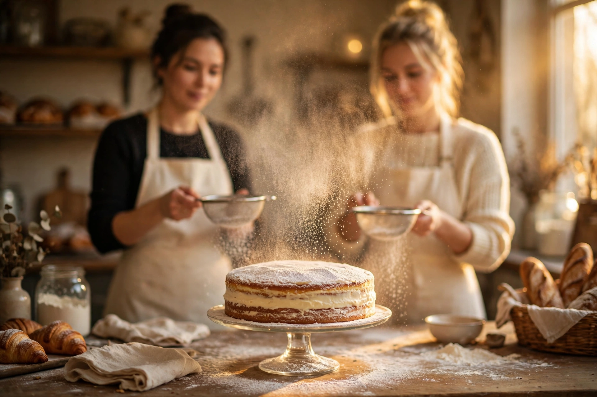

Unsere Geschichte · Gera
Zwei Konditorinnen, eine Leidenschaft für echte europäische Handwerkskunst.
Wir sind Dariia & Nataliia. Aus unserer ukrainischen Heimat haben wir über Jahre verfeinerte Meisterrezepturen, tiefe handwerkliche Präzision und den festen Glauben mitgebracht, dass eine Torte mehr ist als nur süßes Gebäck: Sie ist gelebte Gastfreundschaft. In Gera haben wir mit dem Café La Dolce unseren Lebenstraum verwirklicht.
Keine Fertigmischungen, reine Natürlichkeit.
Frischer Röstkaffee & feiner Espresso.
Blick auf das Rauschen der Weißen Elster.
★★★★★ 5,0 Sterne · 50 Google-Bewertungen (laut eigener Website)

Demo-Illustration (KI-generiert) — zeigt nicht Dariia & Nataliia selbst.
☀️ Flusspanorama
Entspannte Nachmittage direkt am Wasser: Genießen Sie Thüringer Gastlichkeit auf unserer Sommerterrasse an der Weißen Elster.
Ehrliches Backhandwerk
Wir glauben an traditionelle Techniken, geduldige Reifung und das Zusammenspiel edelster Zutaten.
Keine industriellen Aromen oder chemischen Bindemittel. Echte Bourbon-Vanille, französische Schokolade und frische Früchte.
Fein abgestimmte Honigteig-Schichten (Medovik), zarter Napoleon und samtige Mousse-Kreationen. Präzise Handarbeit in jeder Schicht.
Ob Hochzeit, Jubiläum oder intime Feier: Wir gestalten jede Festtagstorte als unverwechselbares Unikat für Ihren Anlass.
Sprechen Sie mit uns
Haben Sie Fragen zu Allergenen, möchten Sie einen Tisch reservieren oder eine individuelle Torte anfragen? Schreiben Sie uns — wir freuen uns auf Sie.
📍 Besuchen Sie uns
Café La Dolce Gera, Gera, Thüringen
[Adresse]
🕐 Öffnungszeiten
[Öffnungszeiten]
📞 Telefon & WhatsApp
+49 160 3268838
+49 160 4519326
✉️ Schreiben Sie uns
info.ladolcegera@gmail.com
Eilige Tortenanfrage? Schreiben Sie uns direkt per WhatsApp mit Wunschdatum & Gästezahl. Zur Vorbestellung →
Wir lesen jede Anfrage persönlich und antworten gewissenhaft.
Anfahrt & Umgebung
Unser Café liegt zentral in Gera. Genießen Sie nach Ihrem Besuch einen Spaziergang entlang der Weißen Elster.
[KARTE — Adresse folgt]
Karte & Routenplanung folgen, sobald die Adresse bestätigt ist.
Frisch aus dem Ofen
Sehen Sie sich unsere Tortenauswahl online an und sichern Sie sich Ihren Wunschtermin mit unserem einfachen Vorbestell-Tool.